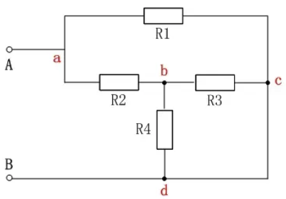
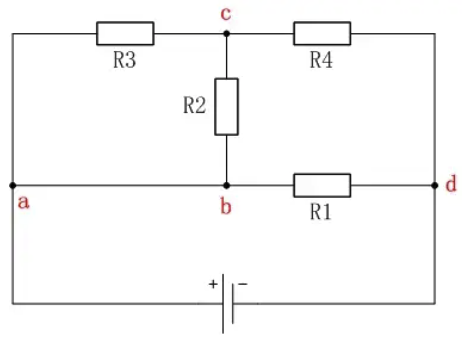
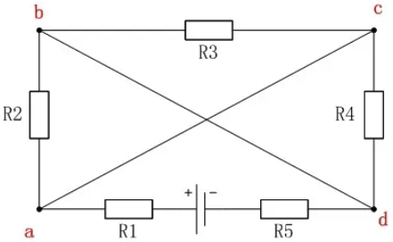
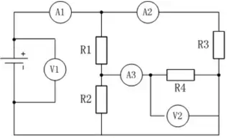
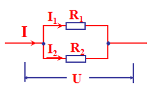
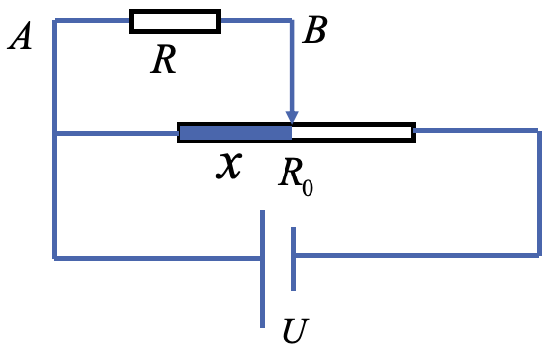
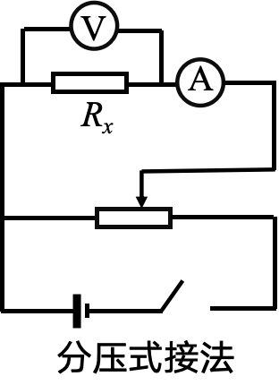
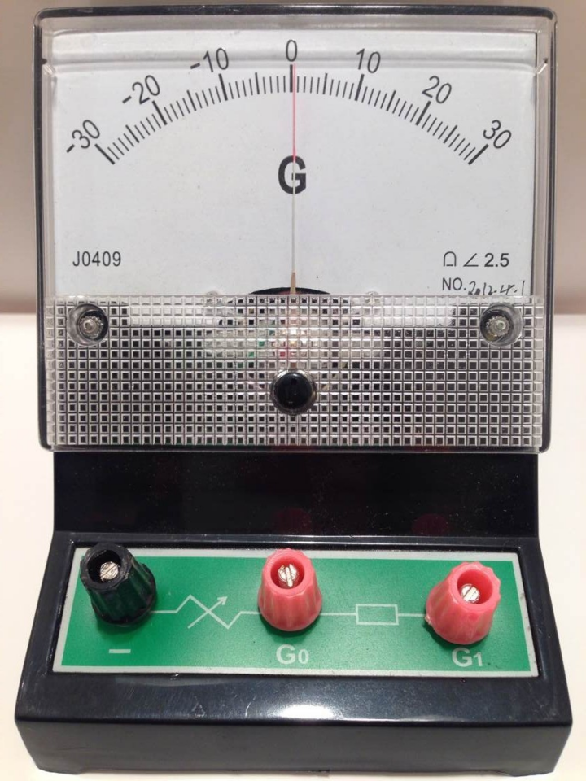
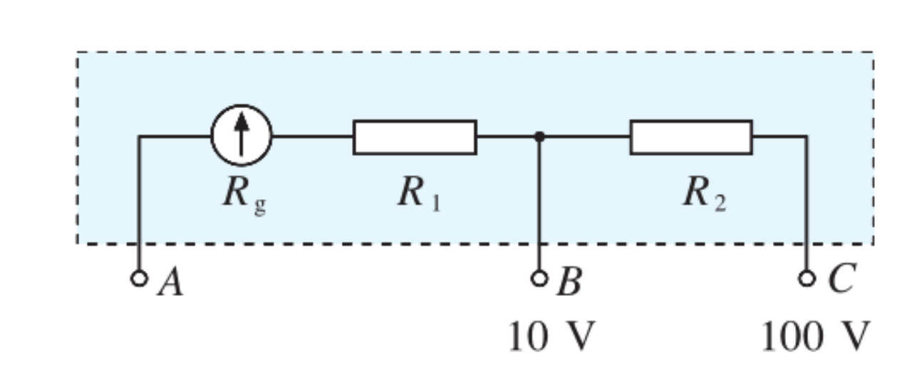
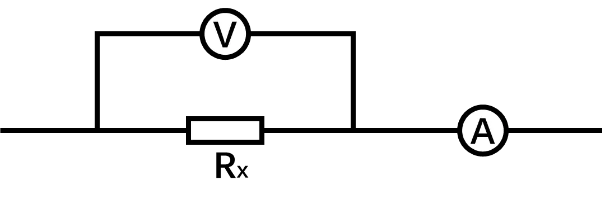

串并联电路的电压
从电势的观点分析串并联电路的电压关系

从电势的观点分析分析复杂电路（复杂电路化简）





串并联电路的电阻
规律


- 串联电路的等效电阻：R=R_{1}+R_{2}
U=U_{1}+U_{2}\Rightarrow \frac{U}{I}=\frac{U_{1}}{I}+\frac{U_{2}}{I}\Rightarrow R=R_{1}+R_{2}
- 并联电路的等效电阻：\frac{1}{R}=\frac{1}{R_{1}}+\frac{1}{R_{2}}
I=I_{1}+I_{2}\Rightarrow \frac{U}{R}=\frac{U}{R_{1}}+\frac{U}{R_{2}}\Rightarrow \frac{1}{R}=\frac{1}{R_{1}}+\frac{1}{R_{2}}
并联电路的等效电阻分析
- 某个电阻增大， R_并 怎么变？
- 某个电阻拆除， R_并 怎么变？
- 增加一个支路，R_并 怎么变？
- 一个电阻和一根理想导线并联， R_并=？
- N 个相同电阻 R 并联， R_并=？
- R_1>R_2，并联后， R_并 接近谁？
- 若 R_1 远大于 R_{2}，R_并=？
- 根据上述讨论，你认为 R_并 的变化受哪个电阻影响更大?
分压式接法和限流式接法
分压式接法
- 当滑片在中央时，且 A、B 之间无负载时，U_{AB}=？
- 当滑片在中央时， A、B 之间接入负载时，比较 U_{AB} 与 \frac{U}{2} 的大小?
- 为了让 U_{AB}=\frac{U}{2}，滑片应该向哪里移动？
- 通过上分析，你认为 U_{AB} 与接入长度 x（电阻）的阻值成线性变化吗？

- 当 R_0 和 R 满足什么条件时， U_{AB} 与 x 成线性变化？
- 若 R \gg R_0 呢？ U_{AB} 随接入长度 x 的变化的形状会怎么样？
两种接法比较
问题：分压式/限流式接法怎么选
- 要求电压表从零开始读数，选哪种接法？
- 用 R_{0} 表示滑变电阻的最大阻值，E 表示电源电动势，求 R_{x} 端电压的取值范围；
- 待测电阻 R_{x}\gg R_{0}，选那种接法？
- 测量同一个 R_{x}，那种接法干路电流大？
- 有烧表风险时，选哪种接法？有节能需求时选哪种接法？


总结
| 限流式 | 分压式 | |
|---|---|---|
| 原理 | 通过滑变电阻限制整个电路的电流，调节 R 的电流 | 通过调节并联电路的分压比例，调节 R 的电压 |
| 滑片初始位置 | 为保护电路，初始时滑片处于电阻最大端 | 为保护电路，初始时滑片处于干路电阻最大端 |
| 滑变电阻最大阻值 R_{0} | R_{x} 的 2\sim10 倍 | R_{0}<2R_{x} |
| R_{x} 端电压范围 | \left[ \frac{R_{x}}{R_{x}+R_{滑max}}E \right],E | [0，E] |
| 优势 | 省电；省线；好接 | 从零开始调节，范围大；防烧表 |
要求大范围必分压（从 0 开始/尽可能准确/要测多组数据/调节范围大）
根据电阻分析（R_{滑 max}<2R_{x} 分压；R_{x} 的 2\sim10 倍限流）
防烧表必分压
要节能必限流
电表的改装
认识表头

表头，又称灵敏电流计、微安表
两个重要参数：
- 表头内阻 R_{g}；
- 满偏电流 I_{g}
表头可以直接当电压表用吗？
量程是多少？（已知内阻 R_{g} 和满偏电流 I_{g}）
表盘应该怎么改？
改装方法
将一个内电阻 r、满偏电流 I_{g} 的灵敏电流表 G 给改装成为一个量程为 0\sim U 的电压表，应该串联一个多大的电阻？改装后电压表的内阻是多大？
串联电阻两端的电压：U-rI_{g}
通过串联电阻的电流：I_{g}
串联电阻的阻值：R=\frac{U-rI_{g}}{I_g}
改装后电流表的内阻：r_{改}=\frac{rR}{r+R}
内阻为 r 的小电压表改装成为大电流表，量程扩大 n 倍，需要串联一个多大的电阻？

将一个内阻 r 、满偏电流 I_{g} 的灵敏电流表 G 给改装成一个量程为 0\sim I 的电流表，应该并联一个多大的电阻？改装后电流表的内电阻是多大？
并联电阻两端的电压：rI_{g}
通过并联电阻的电流：I-I_{g}
并联电阻的阻值：R=\frac{rI_{g}}{I-I_{g}}
改装后电流表的内阻：r_{改}=\frac{rR}{r+R}
内阻为 r 的小电流表改装成为大电流表，量程扩大 n 倍，需要并联一个多大的电阻？
伏特表和安培表就是一个电阻。（一般改装后的 R_{A}<1\;\Omega，R_{V}>1000\;\Omega）
这个电阻比较“聪明”，可以显示电压和电流。
练习
如图所示, 四个相同的电流表分别改装成两个安培表和两个伏特表。安培表 A_{1} 的量程大于 A_{2} 的量程, 伏特表 V_{1} 的量程大于 V_{2} 的量程，把它们按图接入电路，比较以下量的大小：
- 安培表 A_{1} 的偏转角 \underline{\qquad} 安培表 A_{2} 的偏转角；
- 安培表 A_{1} 的读数 \underline{\qquad} 安培表 A_{2} 的读数；
- 伏特表 V_{1} 的读数 \underline{\qquad} 伏特表 V_{2} 的读数；
- 伏特表 V_{1} 的偏转角 \underline{\qquad} 伏特表 V_{2} 的偏转角。

练习
如图是有两个量程的电压表，当使用 A、B 两个端点时，量程为 0\sim10\;V；当使用 A、C 两个端点时，量程为 0 \sim 100\;V。已知表头的内阻 R_{g} 为 500\;\Omega ，满偏电流 I_{g} 为 1\;mA，求电阻 R_{1} 、R_{2} 的值。

练习
如图是有两个量程的电流表，量程为 0 \sim 1\;A， 0 \sim 0.1\;A。已知表头的内阻 R_{g} 为 200\;\Omega，满偏电流 I_{g} 为 2\;mA，问：
- AB、AC 哪两端的电流量程大？
- 电阻 R_{1} 、R_{2} 的值。（列出方程即可）

解
接 A、B 时，量程记为 I_{1}=1\;A；接 A、C 时，量程记为 I_{2}=0.1\;A
\begin{cases} I_{1}=I_{g}+\frac{R_{g}+R_{2}}{R_{1}}I_{g} \\ I_{2}=I_{g}+\frac{R_{g}}{R_{1}+R_{2}}I_{g} \\ \end{cases} \Rightarrow \begin{cases} R_{1}=\frac{20}{49}\;\Omega \\ R_{2}=\frac{180}{49}\;\Omega \\ \end{cases}
电流表内外接
两表的读数为 U 和 I，两表的内阻记为 R_{V} 和 R_{A}

- 求电流表内接时待测电阻的真实值 R_{真}？
R_{真}=\frac{U-U_{A}}{I}=\frac{U-IR_{A}}{I}
- 与 R_{测} 进行比较并分析误差来源？
R_{测}>R_{真} 。因为电流表分压了，实际测得的是电阻和电流表的串联电阻 R_{测}=R_{真}+R_{A}

- 求电流表外接时待测电阻的真实值 R_{真}？
R_{真}=\frac{U}{I-I_{V}}=\frac{U}{I-\frac{U}{R_{V}}}
- 与 R_{测} 进行比较并分析误差来源？
R_{测}<R_{真} 。因为电压表分流了，实际测得的是电阻和电压表的并联电阻 R_{测}=\frac{R_{真}\cdot R_{V}}{R_{真} + R_{V}}
- 两种解法分别适用于什么情况？